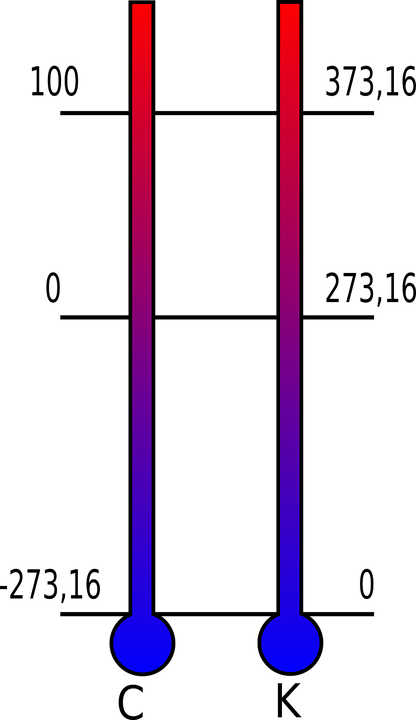

A gas is defined using the following properties. Most of these are familiar concepts, you can probably guess the general idea behind them:
1. Pressure: Pressure is defined as the `"force"/"area"` . You can think of pressure as how hard an area is being pushed. Pressure is commonly given in units of atmosphere (`"atm"`), though units of Pascals (`Pa`), torrs (`"torr"`), and millimeters mercury (`"mmHg"`) are also used.
The conversion factors are `1 "atm"=101325 Pa=760 "torr"=750 "mmHg"`
The standard atmospheric pressure is defined as `1 "atm"`. This means that everything under "standard", or normal, conditions (the air in your room, your laptop, you), is under `1 "atm"` of pressure.
Something important to note is that pressure cannot be negative. Pressure is always a positive value.
2. Volume: Recall that gases take on the volume and shape of the container that they're confined within. The volume of a gas is therefore equivalent to the volume of the container. Volume is given in units of liters (`L`).
Just like pressure, volume cannot be negative. Volume is always a positive value. The change in volume (`DeltaV`) can be negative if the volume is decreasing, but the volume of an object itself can never have a negative value.
3. Temperature: Just like solids and liquids have a temperature,  gases can be defined in terms of temperature as well. If you've ever put your hand over boiling water, this should be familiar. Temperature is defined in units of Kelvin (`K`), though it is commonly given in units of Celsius (`°C`) or Fahrenheit (`°F`).
In order to convert from Celsius to Kelvin, add 273 to the Celsius value. The Kelvin scale is simply shifted 273 upwards from the Celsius scale. For example, `0°C=273K`.
The standard temperature is defined as 25°C, or 298K. Temperature, just like pressure and volume, can never be negative when using the Kelvin scale. The lowest value possible on the Kelvin scale is `0K`, which is colloquially called "absolute zero".
The amazing thing about gases is that most of them exhibit the exact same physical properties! It doesn't matter whether the gas is neon or hydrogen, the gas will behave the same way physically. The Ideal Gas Law provides a relationship between the various varibles of a gas. Notice that the law only applies for ideal gases. The definition of an ideal gas will be given in the next post on the properties of a gas, but we can make the generalization that an ideal gas is one that follows the ideal gas law. Very circular logic, yes. The law is usually given as:
`PV=nRT`
`P` = Pressure in `"atm"`
`V` = Volume in `L`
`n` = number of moles
`R` = the ideal gas constant, `(8.314 J)/("mol"*K)` or `(0.08206 L*"atm")/("mol"*K)`
`T` = Temperature in `K`
Whenever you're solving a problem involving the ideal gas law, first convert all of the given values into units of `"atm"`, `L`, and `K`. Since you're most often using units of `L` and `"atm"`, the value of the ideal gas constant you use should be `(0.08206 L*"atm")/("mol"*K)`. After doing that, solving the problem is simply a matter of plugging in values.
With this equation, we can express all of the physical properties of a gas given any combination of two variables from P, V, and T. Given pressure and volume, we can find temperature. Given temperature and volume, we can find the pressure. Given pressure and temperature, we can find the volume.
The ideal gas law allows you to find the third property of a gas given you have the other two. Sometimes, you just want to compare one property to another.
Let's compare pressure and volume for an ideal gas and see what happens when we double the pressure. If we hold the number of moles and temperature constant, we can say that:
For constant temperature
`P_1V_1=nRT`
`P_2V_2=nRT`
Where `P_1V_1` is the initial pressure and volume and `P_2V_2` is the final pressure and volume. `P_2=2P_1`
We can do this because `n` and `T` are constant, while `P` and `V` change. Since both `P_1V_1` and `P_2V_2` are equal to `nRT`, we can set them equal to each other.
`P_1V_1=nRT=P_2V_2`
`P_1V_1=P_2V_2`
This is the general relation between pressure and volume for an ideal gas! This is also called Boyle's Law.
Since we want to see what happens to the volume as the pressure is doubled, we can replace `P_2` with `2P_1`:
`P_1V_1=(2P_1)V_2`
`P_1/(2P_1)=V_2/V_1`
`1/2=V_2/V_1`
This tells us that when we double the pressure of a gas, the volume of the gas becomes half of what it originally was!
Similarly, we can derive expressions for pressure and temperature, and temperature and volume. Try to derive them yourself using the same method as demonstrated above.
For constant volume
`P_1V=nRT_1`
`P_2V=nRT_2`
`P_1/T_1=nRV`
`P_2/T_2=nRV`
`P_1/T_1=nRV=P_2T_2`
`P_1/T_1=P_2/T_2`
For constant pressure
`PV_1=nRT_1`
`PV_2=nRT_2`
`V_1/T_1=(nR)/P`
`V_2/T_2=(nR)/P`
`V_1/T_1=(nR)/P=V_2/T_2`
`V_1/T_1=V_2/T_2`
There are a multitude of relationships that can be derived from the ideal gas law. All of these laws only apply for ideal gases. Later on we'll go over real gases, which will follow a different law. Here are the relationships that the ideal gases follow
| Law | Relationship |
Ideal Gas Law |
`PV=nRT` |
Boyle's Law |
`P_1V_1=P_2V_2` |
Gay-Lussac Law |
`P_1/T_1=P_2/T_2` |
Charles's Law |
`V_1/T_1=V_2/T_2` |
Avagadro's Law |
`V_1/n_1=V_2/n_2` |
Instead of memorizing these relationships, derive them from the ideal gas law! Doing so means that you'll never have to memorize anything other than the ideal gas law. It may seem like a daunting task, but after a few times it'll become second nature.
So far, we've only talked about ideal gases. While all gases can be modeled as ideal gases, it is sometimes more useful to approximate gases as real gases. Real gases are modeled by taking into consideration:
1. Attraction/Repulsion between gas molecules.
2. Inelastic Collisions
3. The volume of gas particles
Just like ideal gases have the ideal gas law, real gases have the Van der Waals Equation. The Van der Waals equation adds in corrective factors to the ideal gas law to make it more accurate for the real behavior of gases:
`P=(nRT)/(V-nb)-((n^2a)/V^2)`
Where `b` and `a` are constants for the gas being examined
Notice the resemblance to the ideal gas law. The `-nb` term corrects for the volume taken up by the gas molecules: the more moles of gas there are, the less free volume there is in the gas. The `(n^2a)/V^2` term corrects for the attractive force between molecules: as the number of molecules rises, the more attractive forces there are and the more the pressure decreases.
A gas can be defined using a combination of its properties of temperature, pressure, and volume.
Pressure is given in units of `"atm"` and is the force exerted over the entire area of the gas.
Volume is given in units of `L` and is the volume of the container that the gas is in.
Temperature is given in units of `K`.
Pressure, volume, and temperature are always positive values.
An ideal gas is one that obeys the ideal gas law.
The ideal gas law provides a relationship between the three properties of a gas.
Real gases are modeled through the Van der Waals equation and take into account the interactions between molecules and the volume occupied by molecules.
1. What is an ideal gas exactly?
We said earlier that an ideal gas is one that follows the ideal gas law. This is probably a very unsatisfactory answer. Ideal gases are modeled according to a theory called kinetic molecular theory, which is covered in the next post. The basic idea behind this theory is that ideal gases consist of individual molecules travelling in a straight line which do not interact with the other gas molecules.
In reality, the gas molecules will all interact with each other be it through Van der Waals interactions, or collisions, etc. By modeling gases as ideal gases, we can predict the bulk of their properties.
2. Why do we model gases as ideal gases?
Gases are often modeled after ideal gases because, at standard temperature and pressure, gases behave pretty close to ideally.
If you look at the Van der Waals equation, you'll notice that the correction terms `V-nb` and `(-n^2a)/v^2` only come into play under certain conditions: when the volume is small and when n is large. When `V` is small, the `-nb` is significant and affects how the gas behaves to a noticeable extent. When `n` is large, the `(n^2a)/V^2` term affects the equation significantly. On the other hand, when `V` is large, the small `nb` term doesn't do much to it. Likewise for the second term.
Since most of the time, `V ">>" nb` and `n` is small, we can approximate the Van der Waals equation with the ideal gas law.
3. Where does atmospheric pressure come from?
The atmospheric pressure is the pressure from all of the air. Notice that the atmospheric pressure of `1 "atm"` is unique to Earth: since other planets have other atmospheres, they'll have different atmospheric pressures.
4. What happens at absolute 0?
At absolute 0, all movement ceases. As of now, we're not entirely sure whether it's possible to reach absolute 0 since reaching absolute 0 would mean that all energy is removed from the system, which we're not sure is possible or not. The lowest temperature ever observed in a lab is `0.0000000001 K`. Isn't that super cool?! (Get it?)